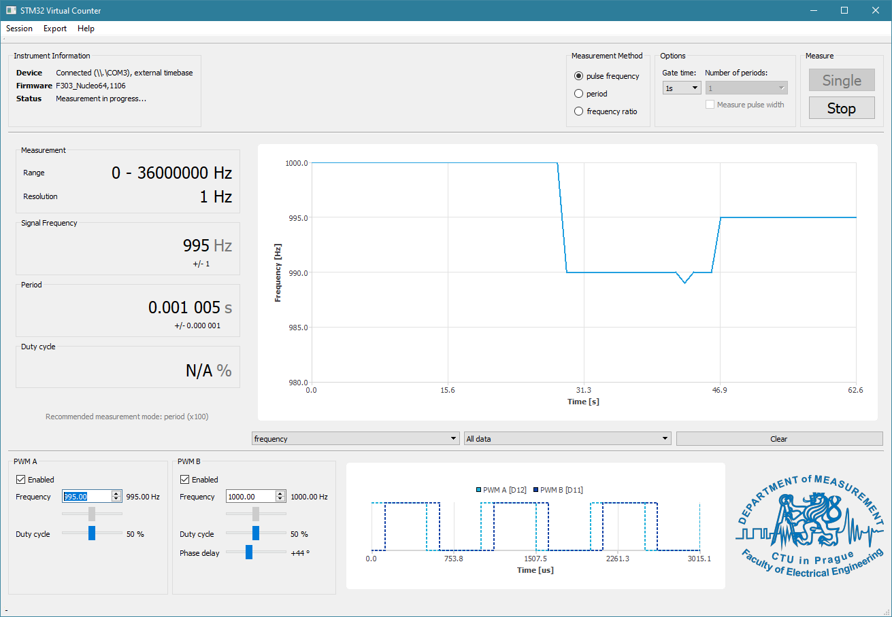

STM32-based Virtual Frequency Counter

Supported hardware platforms
| Microcontroller/kit | Firmware filename | Time base source | Wiring |
|---|---|---|---|
| STM32F042F6 (stand-alone) | |
internal HSI oscillator, continuously tuned from USB timing, or 8MHz crystal between pins 2, 3 (detected at start-up) | here |
| NUCLEO-F042K6 | |
internal HSI oscillator or 8MHz crystal between pins D7, D8 (detected at start-up) | here |
| NUCLEO-F303RE | |
on-board crystal | here |
The firmware is supplied in BIN, HEX and ELF formats.
Supported operating systems
| OS | Binary build provided | Driver installation necessary? |
|---|---|---|
| Windows 10 | yes | none |
| Windows Vista/7/8/8.1 | yes | maybe (see below) |
| Windows XP | yes | yes (see below) |
| macOS 10.12 or later | no | none |
| Linux 3.0 or later | no | none |
Installation on Windows Vista/7/8/8.1
Windows Vista should automatically install the required driver provided by STMicroelectronics through Windows Update.
Installation on Windows XP
Windows XP doesn’t ship with a USB CDC driver. It is recommended to use the STM32 Virtual COM Port Driver. After installing this package, the device should be recognized automatically.
Installation on Linux
No driver is required on Linux-based systems, however it may be necessary to add a udev rule to make the device accessible to non-root users.
The location of udev configuration varies with distribution. For example, on Fedora 32 a file can be created at /etc/udev/rules.d/99-virtualcounter.rules with the following contents:
SUBSYSTEMS=="usb", ATTRS{idVendor}=="0483", ATTRS{idProduct}=="5740", \
ENV{ID_MM_DEVICE_IGNORE}="1", \
MODE:="0666"
This ensures that the operating system will not attempt to use the device as a data modem and that the device will be available to all users.